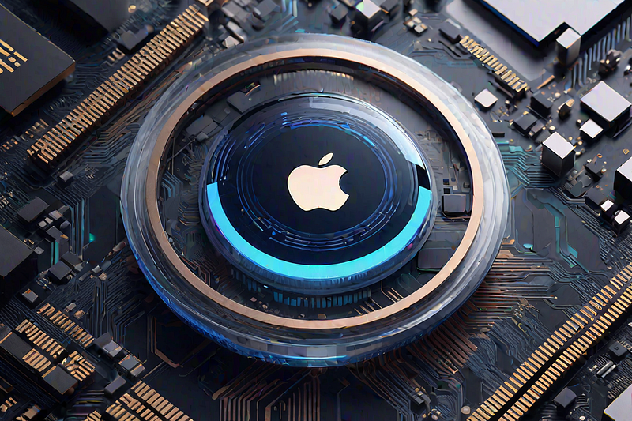
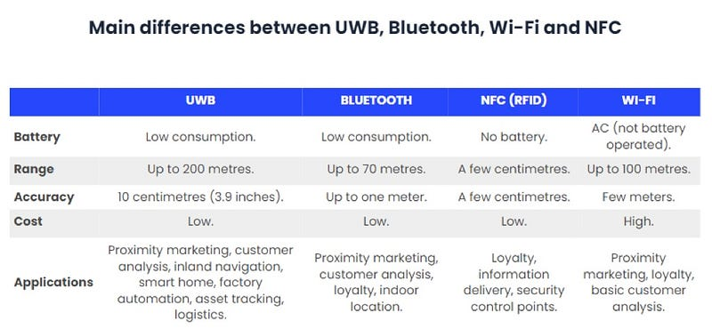
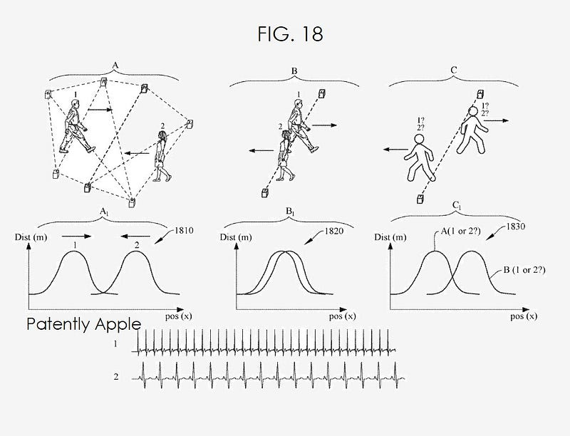
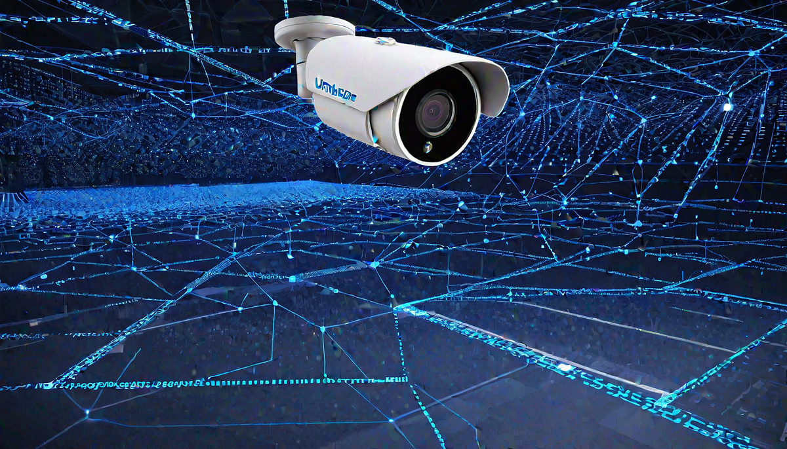
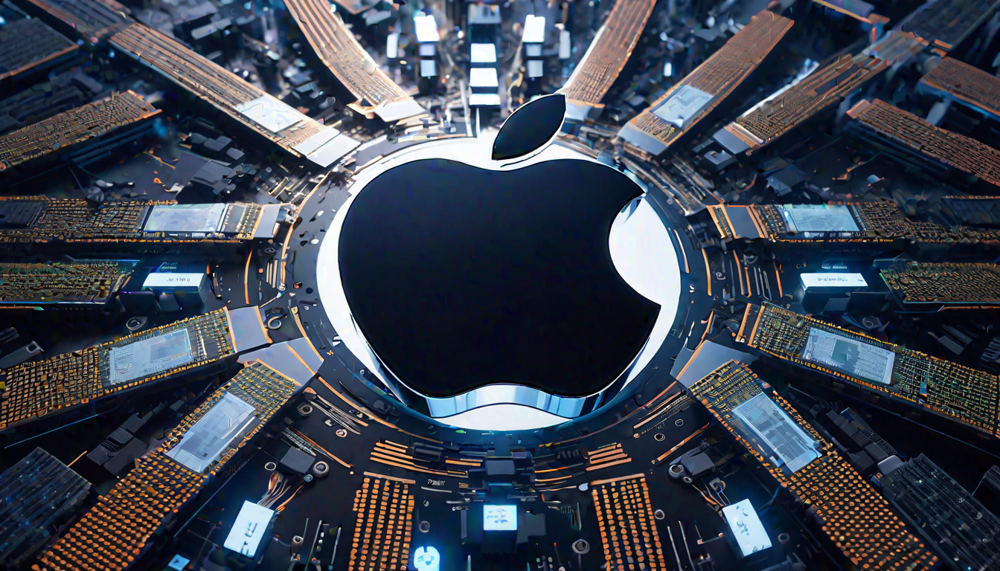
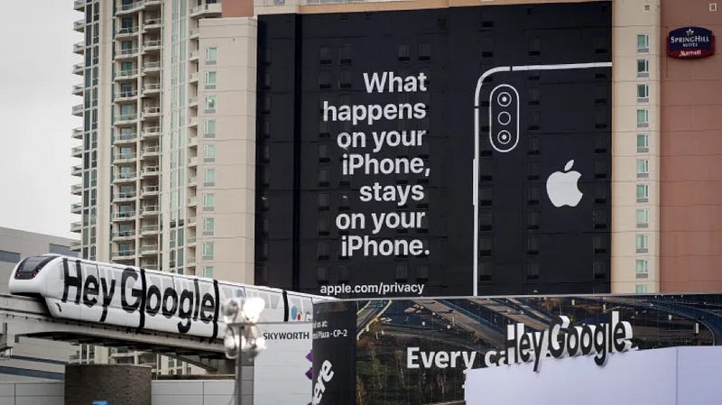
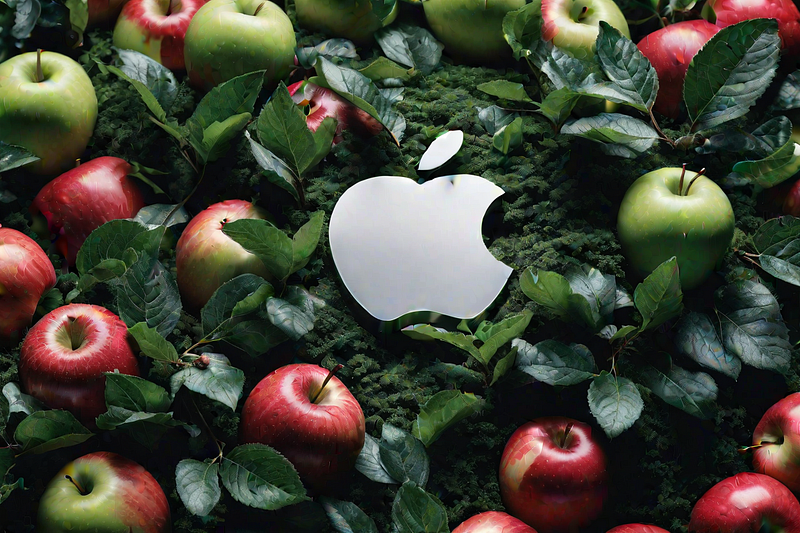

Apple’s Privacy: Stretching Across An Ultra-Wideband
A Theory in Utilizing Anonymized Point Clouds 🔮 Privacy, a valuable but often elusive commodity in our digital era, receives front-and-center attention due to increasingly alarming data breaches and tracking concerns. Tech giants face escalating pressure to innovate and protect user data more rigorously. At the forefront of these developers is Apple, renowned for innovation, which has an opportunity to triumph in the realm of revolutionizing data privacy. Apple’s Privacy Features: Powered by
A Theory in Utilizing Anonymized Point Clouds 🔮
Privacy, a valuable but often elusive commodity in our digital era, receives front-and-center attention due to increasingly alarming data breaches and tracking concerns. Tech giants face escalating pressure to innovate and protect user data more rigorously. At the forefront of these developers is Apple, renowned for innovation, which has an opportunity to triumph in the realm of revolutionizing data privacy.
Apple’s Privacy Features: Powered by Custom Chips
Apple is committed to user privacy and security. To protect user data, they introduced App Tracking Transparency in iOS 14.5, requiring apps to gain user consent before tracking data across other apps/websites. Additionally, they launched privacy labels for apps providing users with data collection/sharing info.
In the cutting-edge world of privacy preservation, Apple has stepped forward as a pioneer, with all their latest devices, progress, potential of spatial computing, and very well could introduce the concept of an anonymized point cloud into the mix, working in the background of one of the world’s largest maching learning armies ever assembled. What’s all this point cloud business? That is an another article on its own, however for brevity and clarity, here’s a short video explanation for better context:
Utilizing their custom A-series and M-series chipsets in conjunction with Ultra-Wideband technology, these point clouds pinpoint user-device interactions without ringing the privacy alarm. However, what makes this innovation sing is how Apple, a household name, has sought to redefine privacy by embedding revolutionary technology within everyday devices — delicately threading the needle between convenience and security. All of this in plain sight.
70 mIt’s also a great way to utilize a low-frequency Bluetooth signal to track positioning, at an accuracy of up to one meter and a range of…These technological cornerstones ensure data integrity by localizing it, fortifying privacy, and accelerating processing performance simultaneously. By using sensors and semantic capture to collect data about user behavior without compromising their privacy, Apple is taking the lead. Sensors are used to collect data about the user’s environment, such as the temperature, humidity, and light levels. Semantic capture is used to analyze the data and provide personalized recommendations to the user. This data is processed on the user’s device, rather than being sent to a server, which helps to protect user privacy. What you see are the beginnings of the largest artificial intelligence and machine learning company on this planet and I would posit that Apple will give birth to this anonymized point cloud internally — an aggregation of anonymized data that records user-device interactions without infringing on privacy. You might be asking yourself, “How on Earth can they do that?” I’m glad you asked.

Ultra-Wideband: Enabler of Enhanced Privacy
The Ultra-Wideband technology (UWB) forms the critical foundation of Apple’s novel privacy framework. Essentially, UWB maximizes the accuracy of spatial positioning, which Apple harnesses to create a detailed point cloud — an aggregation of data points. This technological maneuver bolsters user experiences while preserving anonymity across devices.
100 mNow, for a little bit of context, WiFi can detect your location with an accuracy of roughly six feet, and a range of roughly 100 metersNow, for a little bit of context, WiFi can detect your location with an accuracy of roughly six feet, and a range of roughly 100 meters. It’s what most billboard companies use to ping your mobile phone to see if you’re in the vicinity of the billboard and if you are, that ping is counted as a view. Technically not a view, but this was the only way for the Out-of-Home Advertising world to create a key performance metric to sell more ads. It’s also what a lot of the ‘people counting’ or people counter applications large organizations would employ.

The next step up is Bluetooth, something we all know and love. It’s also a great way to utilize a low-frequency Bluetooth signal to track positioning, at an accuracy of up to one meter and a range of up to 70 meters. This allows for better tracking and accuracy with a large array of applications and integrations. By far the most utility thus far.
The next technology to attempt a better, more efficient spatial location tracking protocol is NFC or RFID. The use of NFC and RFID has increased in the last decade with the embrace of experience design. These tools are very small in size and pack a bunch of utility. They have an accuracy of a few centimeters and a range of a few centimeters.
200 mAnd lastly, we arrive at Ultra-Wideband that has an accuracy of roughly 4 inches for location, however, the range for UWB is up to 200…And lastly, we arrive at Ultra-Wideband that has an accuracy of roughly 4 inches for location, however, the range for UWB is up to 200 meters and requires very little battery power to operate.

All of these technologies are transferring data from different capacities and variable speeds. UWB is the most robust for security, its ability to transfer data, and that quietly over the past three years, UWB chips have been finding their way into every mobile, tablet, and keychain tracker. Apple even has a patent to start and unlock your BMW, more on that in a bit. UWB is what allows you and only you to access your vehicle, and now if you lose your keys you can track them down, something not available with unique coded vehicle key FOBs. Both BMW and Tesla, among others, have moved away from key FOBs and switched over to UWB to power the security behind you and your vehicle.
Key FOBs are small, hand-held devices that make car access easy and convenient — simply press a button to lock and unlock your vehicle. Advanced technology makes them an essential accessory for your keychain.
- The word ‘fob’ is thought to have come from watch fobs, first in use in 1888. It is an ornament attached to a pocket-watch chain.
- The word “fob” (as in “key fob”) has its roots in either Middle English “fobben,” German “Fuppe” (pocket), or German “foppen,” meaning “sneak-proof.”
- Free on Board (FOB) is a term used in retail to identify who is responsible for paying freight charges.
As technology advances, so do the technologies that allow bad actors to simply purchase a signal capture device delivered right to your doorstep for a mere $12k and with this tool, one can capture the digital frequency that is tuned in on your key FOB from less than 50 feet away. Once cloned, this frequency can now unlock your Tesla and allow it to be driven away like they were the owner of the vehicle. UWB has found its way into our access points to guard our most precious possessions, our cars and our homes — digitally customized to your unique signature and making it virtually unable to breach the signal that travels at at 2ms.
Ultra-Wideband technology can transfer data at speeds of up to 10 Gbps, and the ability to pass data at 2ms back and forth without anyone able to ‘tap’ into the transferring data feed. This is much higher than NFC (424 Kbps) and Bluetooth (2.1 Mbps). However, the latest WiFi standards can reach up to 9.6 Gbps, but WiFi can’t hold a candle up to UWB’s security capabilities. Tell me of anyone who can hack a 2ms signal that’s encrypted in transit and at rest. I’m around. Any time. Very curious.
For a deep dive on ultra-wideband technology and applications, an excellent resource to start down that trail is from Qorvo. They bring core radio frequency (RF) and power technologies and solutions to mobile, infrastructure, the IoT, defense/aerospace and power management markets.
Real-World Applications of Apple’s Potential Innovations
Casting a look across diverse industries, the potential seismic shake-ups rippling from Apple’s anonymized point cloud scheme would be substantial. The methodology could spearhead transformative changes in how establishments monitor customer movement or guide indoor navigation with a privacy-conscious lens — a stark upgrade from traditional, often intrusive approaches.
To genuinely appreciate any technology, it’s crucial to understand its practical (and potential) applications. For instance, a store aiming to improve their business based on customer movement patterns could traditionally rely on CCTV or Bluetooth beacons — both potentially privacy-intrusive. Here the anonymized point cloud by Apple shines — enabling real-time tracking of customer traffic patterns without compromising privacy. Moreover, it paves the way for improved indoor navigation and enhanced augmented reality experiences, from beacons to Tiles, to embedded UWB chips in all your mobile devices and tablets. It also makes Personal Identifiable Information (PII) no longer a point of conflict which removes a tremendous amount of red tape on the legal fronts for, for the time being.
For example, in an airport, WiFi routers equipped with this technology could enhance security and improve efficiency, detecting crowd movements, and identifying potential traffic congestion while minimizing the risk of a personal data breach. The drawback of WiFi systems is that they cannot see through walls very well. So, across industries, Apple’s technology with their integrated UWB systems of intelligence extraction is poised to break new ground in privacy ‘friendly’ tracking solutions.
UWB technology has the potential to essentially see through walls and can even capture capture vital signs which we explore. Its possible uses range from spatial positioning to privacy systems, making it a powerful tool if one was to create an entirely new privacy system in the form of a pseudo-anonymized point cloud. The feigned anonymizing is creates an opportunity for certain skilled inviduals to easily create a unique identifier, the Holy Grail of surveillance, and ultimately a Sousveillance Economy.
Even extending the UWB with Impulse Radio, IR-UWB is capable of capturing your heart rate variability (HRV) and other biometrics from a device the size of a smoke detector with the accuracy of an ECG machine. Concurrently, it could pave the path for the broader application of encryption-enhanced hotspot operation. The revolution ushered in by Apple not only caters to privacy-conscious individuals but also industries seeking efficient yet privacy-compliant tracking solutions.
To drive a very spatial understanding home, currently most of us have a phone with an antenna on it and it emits a signal outwards, similar to how 360 video is captures — shooting outwards. Whereas UWB essentially does the opposite and captures from everywhere and converges on a single endpoint or subject, akin to volumetric capture where you’re surrounded by cameras and capturing every single angle and dimension, mapping with extreme accuracy. Now, if one could place devices all around us, similar to the cameras that surround a volumetric capture, we would have unprecedented levels of accuracy. Every plugin serving as a beacon to capture any space in three dimensions, track multiple entities with persistent tracking and unique identifiers that we have no option of opting out of.
“No matter where you go, there you are.”

“No matter where you go, there you are”But what’s going on under the hood? What has Apple created underneath all the new technology and promise of security? Apple has created a robust privacy infrastructure that includes both hardware and software components. The hardware components include features like the Secure Enclave, which is a separate processor within the device that stores sensitive data like biometric information and encryption keys. This ensures that even if the main processor is compromised, the sensitive data remains secure.
Apple’s pseudo-anonymized point cloud technology would have particularly exciting potential in an array of fields beyond tracking store visitor behavior or WiFi users. Think about the applications in autonomous cars where sensor-derived point clouds depicting cityscapes could improve navigation without compromising the privacy of pedestrians or other drivers. Or inside the vehicle to a scenario where the driver is nodding off, the UWB in the vehicle would sense the change in posture and position and would then initiate proper protocol to attempt to wake you or if it’s a semi-autonomous vehicle, take over the driving. Similarly, health professionals could monitor patient health outcomes over time without breaching their privacy rights. By harnessing anonymized point clouds, industries ranging from healthcare to transportation can unlock in-depth insights while conforming to privacy norms. The possibilities enabled by this technology widen as developers come to grips with its versatility.

Breathing Privacy into WiFi Tracking Solutions
Embedding privacy into seemingly mundane features like WiFi tracking may seem somewhat alien for the everyday user, sparking expected concerns. As renowned cybersecurity expert Bruce Schneier professes,
“Data is the pollution problem of the information age.”
“Data is the pollution problem of the information age”Skilled navigation through regulatory challenges as they arise would do much to ensure the seamless fusion of security with advancement.
Consider the versatility and effectiveness of anonymized point cloud technology in WiFi tracking solutions. Currently, sensitive details like device data and location information can potentially be exposed when WiFi routers provide services such as people and device counting, and intrusion prevention. Apple’s anonymized point cloud could address this issue. Using anonymized data could continue the WiFi routers’ essential functions while ensuring that the device or individual’s identity remains concealed.
Navigating Regulation Challenges
Apple’s anonymized point cloud would mark a significant stride in privacy, but it’s not without its dilemmas. Critics argue for stringent regulation of even anonymized data to curb possible misuse, landing Apple — and other corporations — in a tug-of-war between tech innovation and regulation.
However, despite these promising applications, there remains a persistent call for further investigation into the implications of such technological advances. Skeptics caution against the risk of data exploitation or breaches that could potentially arise even with anonymized data. Critics voice concerns that regulation of such technologies needs to evolve tangentially to ensure consumer protection. Innovative privacy solutions like Apple’s anonymized point cloud put corporations on a tightrope walk between advancing their technologies and maintaining the sanctity of user privacy.

Privacy vs. Regulation Challenges, A Dilemma
Continuing from the previous section, ongoing regulation challenges necessitate a reiteration. In the digital age landscape, one question looms large: How can corporations like Apple innovate their technologies while also upholding users’ privacy rights? A delicate balance to achieve, it remains a significant hurdle, fraught with dual objectives and diverse strategies.
While Apple’s advances toward user privacy are laudable, the push for stronger regulations tends to be overlooked. Naturally, these concerns largely revolve around the potential misuse of anonymized data. Critics argue that a crucial ingredient for innovation is a robust oversight system: one that balances technological leaps and bounds while maintaining the sanctity of consumer data protection.
Even as conglomerates like Apple foray into this strenuous route, parallels can be drawn with other big tech mammoths like Facebook, who have faced similar regulatory roadblocks in the wake of privacy controversies.
Leveraging the Lessons from Facebook’s ‘Pixel’ and Cookie-Based Tracking
To further appreciate Apple’s efforts, let’s draw parallels with existing metrics. Consider ‘Pixels’ from Facebook or cookie-based trackers — workhorses behind highly tailored online experiences. However, the catch lurks in these applications’ security and privacy implications — food for thought for consumers, corporations, and regulators alike.
For perspective, it’s worth looking at Facebook’s ‘Pixel,’ a technology designed for advertisers to monitor user activity on ̶t̶h̶e̶i̶r̶ any websites. Upon installation on a website, this data reveals valuable insights about user behavior, conversions, and several other factors aiding precise ad targeting. However, it raised substantial concerns about invasions of privacy as the data collection occurred without explicit user consent.
That is to say, the traditional cookie-based tracking systems still remain a contentious issue these days. While useful in understanding user preferences and customizing their web experiences, cookies frequently raise eyebrows due to invasive tactics, tracking users across disparate websites quietly. Critically, they store sensitive personal data in the process which raises the issues of trust and discretion over personal data management.
In response to all these cookies and pixels, Apple made an investment in a well-placed and timed ad to speak to their stance on the matter which I happened to catch during CES in Las Vegas in 2019:

Comparatively, if Apple’s anonymized point cloud concept becomes a feature, not a bug, this innovation potentially provides a great balance between data utility and consumer privacy. However, as witnessed with Facebook’s ‘Pixel’ and conventional cookie-based tracking systems, surveillance concerns and fighting off criticism over privacy breaches are intrinsically linked with developing such profound technologies.
Unlike Apple’s potential anonymized point cloud where the integrity of user data takes precedence, Facebook’s ‘Pixel’ technology prioritized advertising objectives. Facebook’s Pixel, once widely used, raised significant privacy concerns as it allowed advertisers to monitor user activity without explicit consent. Similarly, traditional cookie-based tracking systems have also fallen under the scanner for their invasive, privacy-compromising tactics. Both examples remind us of the precarious ground companies tread when privacy is at stake.
If internet traffic analysis is already problematic, it’s easy to guess what might occur when most of our biometrics, movements, and environments are tracked. The analysis is performed on all sounds in the background (which are classified with machine and deep learning) to identify variables that could remove friction when suggesting outcomes. All useful details are stored for later use.
Imagine someone had access to your data, preferences, and whereabouts, all kept securely. Now, add to this a second dataset of biometrics, point-of-location tech, and vectors. If all this data were put together, it could be made identifiable — like a million-piece jigsaw puzzle. Who better for that task than a deep machine learning infrastructure being built right in front of your very eyes? Gives a little edge on most.
Remember when Facebook started adding emoji’s to posts? That was to further segment user reactions and begin to develop a persona based training model. They were casting a large net to see what our emotional reactions to various content would be. It was found that controversial and brain health harming content had more virality to it and would be weighted heavier in the algorithmic models that serve out content in the feed. That was from simply providing five new variables to granularize the data into workable theories and practices. Imagine, instead of extrapolating people’s wants, needs, and intentions from a graph of potentially related nodes to the actual want, need, and intention based of the physiological changes of that unique individual that can be monitored with a device that is protecting your privacy, money, and identity—and trust with near implicity. Precision health, medicine and now life — delivered instantly from some thing that is always there, watching, monitoring, assessing literally all the machines learning.
As I write these words a small voice in my head narrates the slogan,
“We make sure nothing gets by you, or us. The all new, Apple Care Plus+”
Nurturing the Future through a Constructive Lens with Greater Privacy Controls and Regulating Laws
Bridging the gap between the present and a privacy-enhanced future calls for more than innovative technologies. Regulations that adapt and evolve with ongoing developments, secure legislative practices, and a collective, informed approach towards privacy from consumers are also critical components. Daniel Solove, a leading privacy law expert, once stated, “Privacy is complex and therefore difficult to protect.” Indeed, simple yet profound statement that truly makes the slippery slope we’re sliding down a difficult scenario to navigate. It’s this multifaceted endeavor that ultimately feeds the flame for transformative privacy-geared ideas.
Although Apple’s paradigm differs significantly from Facebook’s tactics or the conventional cookie tracking system, critics persistently demand further scrutiny and controls for more definite privacy standards. This cautious stance is justified, particularly because the misuse of even anonymized data can quickly turn these marvels of technology into potential liabilities.
Notwithstanding the immense benefits Apple’s anonymized point clouds could bring forward, stringent regulation is critical to counter any negative implications. Amidst this deadlock between technology advancement and privacy protection, organizations like Apple tread carefully.
With this comparison, the pivotal takeaway is clear — privacy policy development is as essential as the advancements in technology itself. Regardless of how innovative or game-changing a technology is, without the appropriate safeguards, it runs the risk of diminishing public trust and violating its intended purpose of enhancing user experience.

Awakening Skepticism: The Need for Oversight
That being said, striking the harmonious chord between tech advancements and privacy is a path known for failures as much as successes. Consider Google Buzz’s privacy issues or Uber’s 2016 data breach — instances that painfully highlight the scope for oversight necessary to couple innovative tech with privacy needs.
Despite promised anonymity, skeptics caution that no technology is entirely impervious to breaches. The risk of data interpretation under certain scenarios still persists. These considerations highlight the need for rigorous oversight to prevent any potential intrusion. Without comprehensive safeguards, even technological advancements with the best of intentions could backfire.
Balancing Technological Advancements and Privacy
Apple navigates the fine line where technological innovation and consumer privacy intersect. Striking this balance is as intricate as it is vital in our digital age. It’s imperative that strides in technology are made in tandem with tight privacy protections and ethical data handling.
As we encapsulate the insights and discussions ignited throughout this piece, it’s clear that there’s no easy solution. The transition into a future cognizant of digital privacy rests greatly on our collective shoulders — the developers driving tech innovation and the individuals willing to embrace it.
Stepping Into A Future with Privacy-Protected Convenience
The footprint Apple is leaving in the realm of data privacy with the potential of an anonymized point cloud could theoretically create the Holy Grail of Unique Identifiers, a very compelling narrative. By synergizing custom chipsets and UWB technology, they set new ethical paradigms in data handling. This endeavor isn’t symbolic. It’s a testament to how corporations like Apple navigate the razor’s edge between technological innovation and privacy preservation. As we stride towards the era of sophisticated technology, it fuels our fundamental concern: Is it possible to resonate with the echoes of privacy while exploiting the transformative potential typified by innovations like Apple’s anonymized point cloud? With the balanced progress of both privacy regulations and technological advancement, the answer leans towards affirming such a possibility.
However, theoretically and hypothetically, there would be no better way to control a nation under a groove than to have the citizens volunteer their own surveillance. Which practically requires no need to keep tabs on the population when it’s running autonomously with the data retrained for very finely-tuned purposes. These are the black boxes we will never have access to. The leveraging power of what these data pools will surface will pale in comparison to a few cookies and the crumbs of transactional insights once provided.
Emphasizing Tim Cook’s acknowledgment on privacy,
“We see privacy as a fundamental human right.”
“We see privacy as a fundamental human right”This conviction from Apple’s helm demonstrates a forward-thinking commitment, laying a bright blueprint for the future where innovation doesn’t compromise privacy but embraces it. Now, it’s up to us to learn, adapt, and scale these privacy-anchored innovations to encapsulate an expansive range of digital interactions. As more companies join this stride, we can expect a future where technology and privacy thrive mutually, forging a digital era that in true essence respects and protects the individual. With that kind of trust and the barrels of existing information they have of ours, it’s an easy step for us to go along with serves the most convenience, until it doesn’t.
Our task lies in honing the balanced outcome navigated by big tech giants like Apple. As we harness expansive digital interactions accompanied by privacy protections, we sketch our path into the ecosystem of a truly privacy-protected future. Without our data, none of their model will operate. We do have a say in how that data is being used, for us and against us, transparently and openly with a self-sovereign identity. Think differently, indeed. For everything you thought, will no longer be.
Welcome to what will be, undoubtedly, a very fruitful journey to heed!
🍎
For a deep dive into all things UWB-related, you can refer to my collection of pertinent and relevant tidbits from my knowledge base.